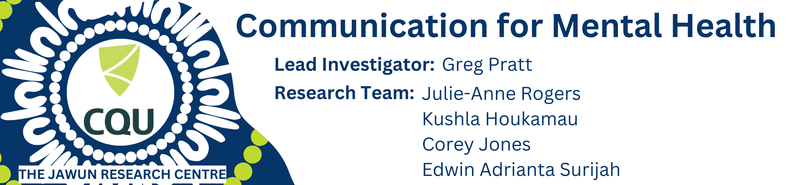

Summary Report: Yarning Circle Phase 1

A. Executive Summary
This research project is part of the development of communication training for non-Indigenous mental health professionals or clinicians, aimed at improving mental health communication with Aboriginal and Torres Strait Islander patients. It is acknowledged that First Nations Australians have poorer health outcomes compared to the non-Indigenous population. In the space of mental health services, quality mental health communication between non-Indigenous clinicians and First Nations patients can address this health disparity.
Yarning circles were conducted across four hospitals and health services in Queensland, involving more than 136 non-Indigenous clinicians and Aboriginal Torres Strait Islander mental health workers. They shared their experiences in communicating with First Nations patients and strategies to develop effective communication. Findings indicate that clinicians need to hold core values of respecting First Nations patients and acquire crucial skills such as building rapport, understanding local customs, and using layperson terms. Furthermore, clinicians need to understand the patient’s history of oppression, experience of transgenerational trauma, and ongoing racism to fully implement a person-centered approach in delivering mental health services.
The implication of these findings is the preparation for the next part of the study, where the patient’s voice will be the main focus in validating the current findings and informing the training development. The findings also challenge the existing health system, suggesting that changes are needed at the system level to provide clinicians with the flexibility to realise quality mental health communication and subsequently improve mental health services for First Nations patients.
B. Introduction and Background
In Australia, almost 1 in 3 Aboriginal and Torres Strait Islander adults (31% or 149,400) had high to very high levels of psychological distress in 2018–19, more than twice the levels of non-Indigenous adults (13%) (Australian Institute of Health and Welfare 2020). In Queensland, mental health is a leading contributor to burden of disease, accounting for approximately 20% of the total disease burden experienced by Aboriginal and Torres Strait Islander peoples (Health 2016). The National Aboriginal and Torres Strait Islander Leadership in Mental Health (NATSILMH) highlighted a need for culturally appropriate and accountable mental health services (Dudgeon et al. 2016).A crucial next step in service development is to ensure that mental health services are culturally sensitive and safe, providing access to staff who practice respectful, reciprocal and person/family/community centric communication.This project will build a cross-disciplinary research team led by Aboriginal and Torres Strait Islander researchers and mental health clinicians. We will engage with Aboriginal and Torres Strait Islander consumers and communities, services providers, and policy makers to co-design and evaluate a patient-centred and culturally sensitive communication training package for non-Indigenous mental health professionals with a goal of improving health outcomes for Aboriginal and Torres Strait Islander patients accessing mental health services.
This project aims to co-design, deliver and evaluate a patient-centred and culturally sensitive communication training package for non-Indigenous mental health professionals, with the goals of: 1) improving health outcomes for Aboriginal and Torres Strait Islander patients accessing Queensland health mental health services and 2) building a culturally competent, responsive and clinically safe mental health workforce. Specifically, this report outlines the results of the yarning circles, during which mental health professionals share their thoughts, ideas, and experiences regarding their interactions with Aboriginal and Torres Strait Islander patients or clients.
This report is being prepared to inform the development of communication training for non-Indigenous mental health professionals. It is being circulated back to the research participants to allow them to provide feedback, ensuring the accuracy of the interpretation from the yarning circles. Ultimately, participants of the yarning circles can connect us with the Aboriginal and Torres Strait Islander patients who will take part in the second stage of the yarning circles.
C. Research Activity
Yarning circles have been conducted with mental health professionals and Aboriginal and Torres Strait Islander mental health workers across three Hospital and Health Services in Queensland from October 2022 to October 2023. A total of 136 research participants discussed and yarned their experiences with mental health communication with Aboriginal and Torres Strait Islander patients. They also shared strategies and barriers to building effective communication. Future yarning circles are planned to be conducted in Cairns. The following breakdown outlines the details of the research activity.
| Metro North | Metro South | Central Queensland | Cairns | |
|---|---|---|---|---|
| Number of Yarning Circles | 6 | 5 | 7 | TBA |
| Number of all participants | 38 | 44 | 53 | TBA |
| Non-Indigenous clinicians | ||||
| ✦ Nurses | 7 | 11 | TBC | TBA |
| ✦ Social worker | 8 | 11 | TBC | TBA |
| ✦ Psychologist | 0 | 5 | TBC | TBA |
| ✦ Team leader | 4 | 3 | TBC | TBA |
| ✦ Others | 9 | 7 | TBC | TBA |
| Aboriginal and Torres Strait Islander mental health workers | 10 | 7 | TBC | TBA |
| Identified Gender | ||||
| ✦ Male | 14 | 19 | TBC | TBA |
| ✦ Female | 24 | 25 | TBC | TBA |
D. Results
Mental Health Professionals (Clinicians) Level. Our findings show that clinicians’ core values and specific skillsets may be key to effective mental health communication. Core values, such as genuine care for Aboriginal and Torres Strait Islander patients and a genuine curiosity to learn from them, can help develop effective communication. This genuineness also includes acknowledging the limitations of their services, which can help patients set the right expectations for the service. Additionally, clinicians should see all patients as equals. This perspective can help build a trusting relationship with the patient, rather than seeing them as objects that need to follow orders and directions. Lastly, clinicians need to have humility to acknowledge their biases and be open to respecting others’ perspectives, including those from their encounters with Aboriginal and Torres Strait Islander patients, their cultures, customs, and belief systems.
It is also evident from the yarning circles that rapport-building skills are highly essential to establish a trusting relationship with the patient. Additionally, clinicians need to avoid using clinical jargon and instead use layperson terms. Another important skill is engaging the patient in an empowering conversation. For example, clinicians need to listen attentively to the patient’s needs. Offering the patient options, such as tea or coffee, and allowing them to choose where to sit, such as at a table or on a comfortable couch, can also help the patient feel empowered.

Aboriginal and Torres Strait Islander Patients Level. In addition to clinicians’ core values and skills, it is expected that clinicians should be aware of their patients’ cultural and historical contexts. The cultural context may include the significant role of family and kinship for Aboriginal and Torres Strait Islander patients. Furthermore, clinicians should also familiarise themselves with the local culture where they are based. For example, offering food can be a good strategy to initiate rapport, but certain food sources can be considered sacred to Indigenous people in a particular country. Lastly, clinicians may need to understand the local communication style and sense of humour, which might differ from their own communication style.
Further, understanding the historical context may assist the clinician in delivering people-centred service. The clinician needs to understand the full context of their patients’ experiences, which may include transgenerational trauma due to the history of colonisation, experiences of racism, and being part of the Stolen Generation. The patient’s ongoing experience of racism and mistreatment by society and authority figures, such as the police, can shed light on why the patient resists mental health services.
(Mental) Health System Level. This section covers a broader range of factors impacting effective health communication. It is noted that the demographic aspect plays a role, as patients in rural or regional areas often have stronger bonds with their communities and may have different experiences with services. For example, Aboriginal and Torres Strait Islander people in rural areas have a higher chance of being transferred to a larger hospital in the city to receive more comprehensive treatment. Additionally, a patient’s age and gender can influence their communication style, with younger patients tending to be more open to communicating with non-Indigenous clinicians. Lastly, it is important for clinicians to understand that Aboriginal and Torres Strait Islander peoples are not a homogenous group and have unique customs and traditions.
At an even broader level, mental health communication also depends on the current situation within the health system. For example, while clinicians may try to take the time to build connections with their patients, they are often required to complete forms and mental status examinations within a timeframe to meet performance indicators. It is also essential for clinicians to be open to understanding the local health model in addition to the Western health model. This openness to the local health model will support them in using a person-centered approach when treating Aboriginal and Torres Strait Islander patients. Lastly, the type of services available, such as long-term facilities, acute care, and emergency departments, may determine the balance in building rapport, creating therapeutic relationships, and managing crises.
Aboriginal and Torres Strait Islander mental health workers. Our findings also highlight the important role of Aboriginal and Torres Strait Islander mental health workers in facilitating effective communication. However, they are often underappreciated, and many health services do not include them as part of their teams. Their roles are often misunderstood, with some seeing them only as interpreters or staff who are called upon when there is an escalation. This finding emphasises the need for clinicians to understand and engage in professional collaboration with Aboriginal and Torres Strait Islander mental health workers to deliver person-centred mental health services.
The Communication Training Package. All the findings described previously will be used to inform the development of the training. In addition, yarning circles have provided us with other valuable insights. For instance, the training content should include techniques for de-escalating tension. The initial stages of a clinical interaction are crucial for building rapport; therefore, the training should also cover strategies for how clinicians introduce themselves and sensitively ask for the patient’s personal information. Clinicians should also learn how to establish common ground with Aboriginal and Torres Strait Islander patients and use self-disclosure carefully during sessions.
Most research participants indicated a preference for face-to-face, full-day training conducted off-site from their workplace so they can concentrate on the training. However, it is important to consider that full-day training might create complications with scheduling rostering. The training content should also include practical skills, allowing participants to learn interactively through case scenarios and role modelling. For example, the trainer could demonstrate a case example, and participants would analyse the effectiveness of the communication. On the other hand, role-playing seems to be the least preferred method. Lastly, the communication training needs to promote behavioural and mindset changes. In other words, the training should not only serve as a template or checklist for communicating with Aboriginal and Torres Strait Islander patients.
E. Moving Forward
In this report, we have outlined findings from the yarning circles with non-Indigenous mental health professionals and Aboriginal and Torres Strait Islander mental health workers. It is highlighted that clinicians should hold a core values in respecting the First Nations patients and put the patient at the forefront of the service. In addition to a genuine care to the patient, clinicians should also acquire skills, such as, rapport building, using payperson terms, and professionally work alongside the Indigenous mental health workers. Further, clinicians should also aware the historical and cultural contexts of their First Nations patients which will facilitate a more person-centred approach. Our findings also acknowledge that systemic changes in health system is inevitable to make the effective mental health communication to take place. Therefore, this research will not stop here.
The next step of this training development will be conducting yarning circles with the Aboriginal and Torres Strait Islander patients. In alignment with the co-design process, it is important for the communication training to be developed with the patient-centred perspective. It is believed that the patient’s input and experiences will further enhance our findings as described before. Eventually, the clinicians will receive this patient-centred communication training through the Phase 2 of the study. Further, we are committed to advocate the systemic-level changes to realise the quality services for the Aboriginal and Torres Strait Islander peoples.